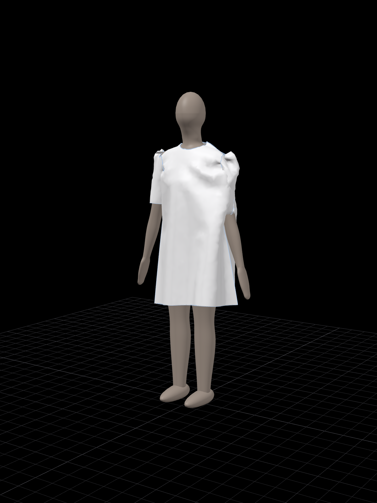
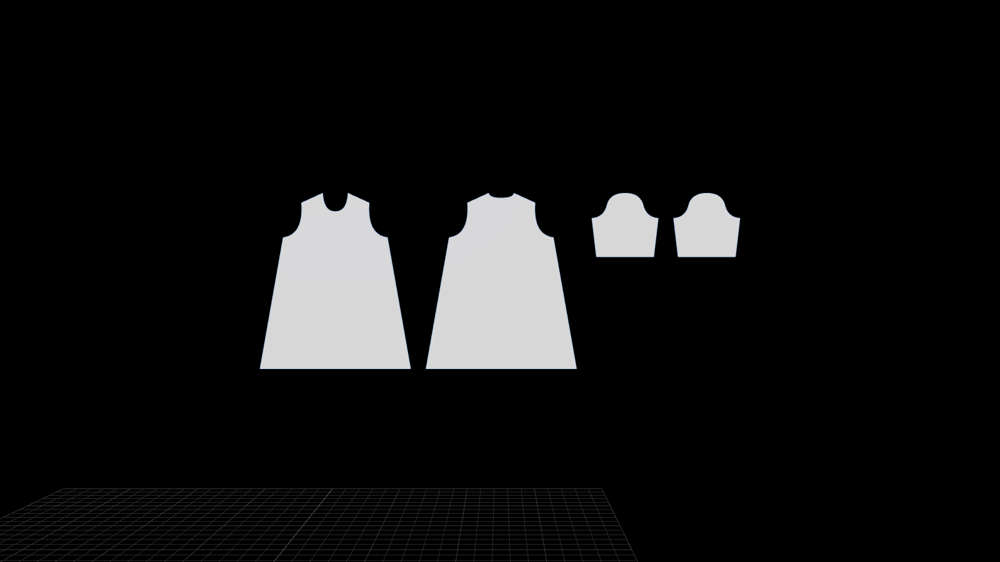
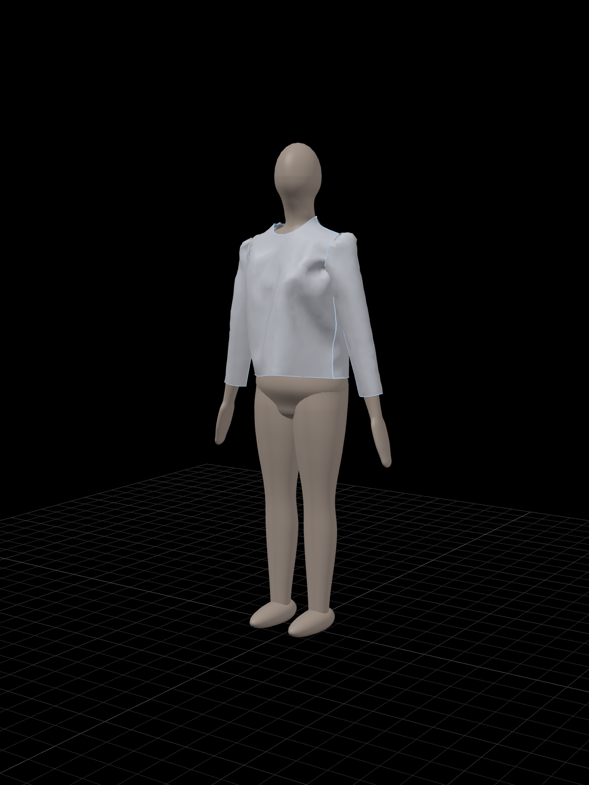
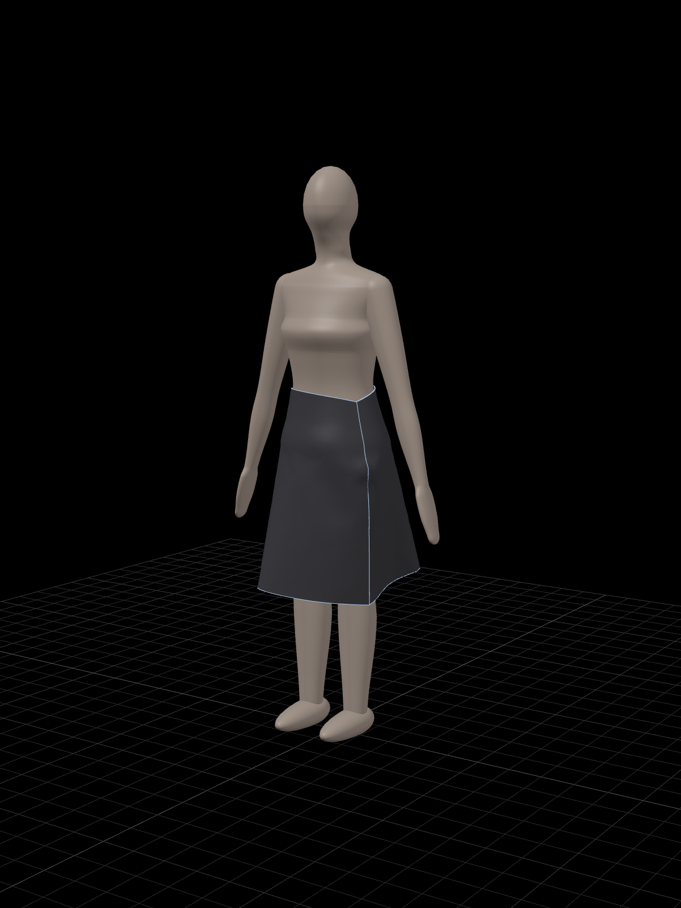
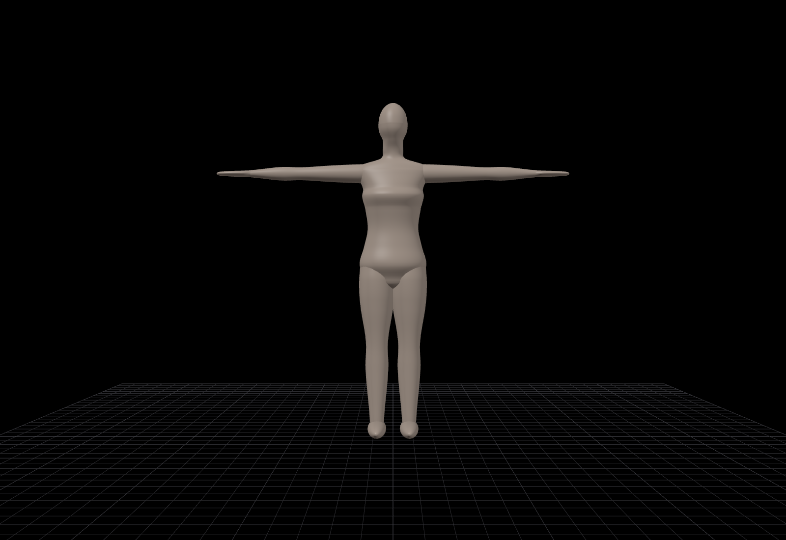
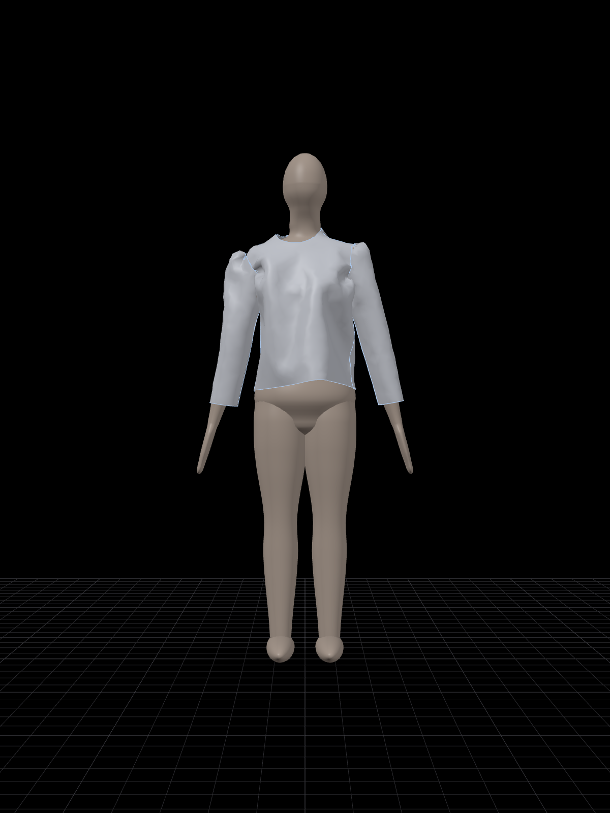
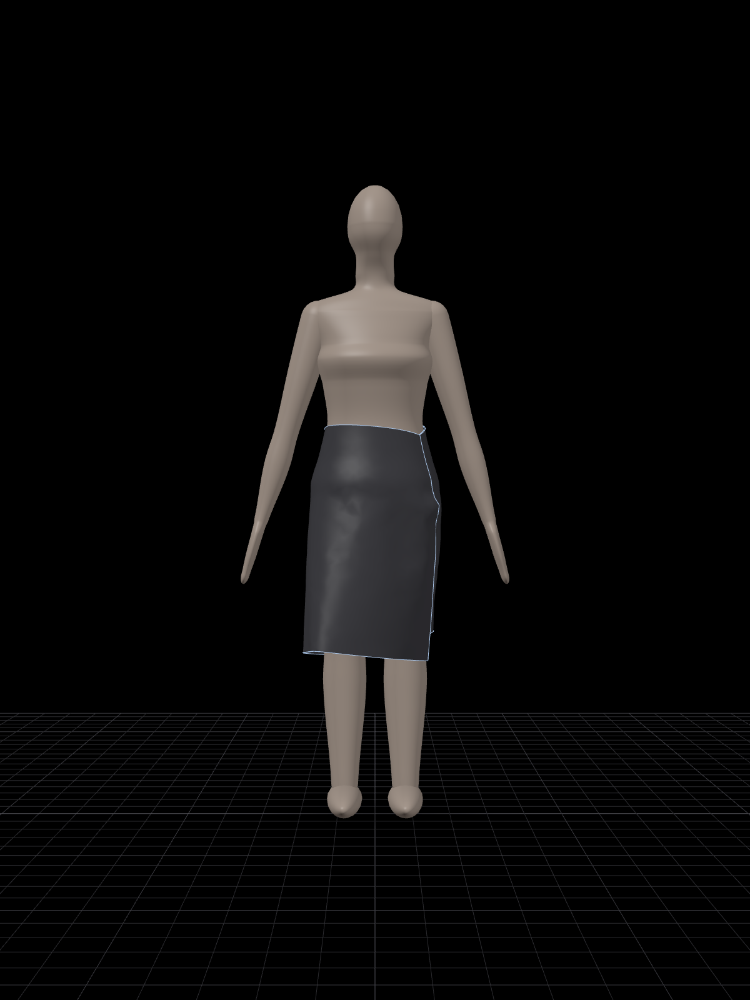

Open-source 3D garment design
Open
Design
Garments drafted in two dimensions, sewn, and draped in three.

Free, written in Rust, and built around the cut, the seam and the fall of cloth.
Draft. Sew. Drape.



The craft, in full.
Pattern drafting
Pen and point editing, curves, snapping with live lengths and angles, seam allowance, notches, grainlines, rounded corners and exact edge lengths.
Darts, pleats, folds
Outline and diamond darts, knife and box pleats tacked at the top, valley and mountain folds. Cut a piece in two, merge two into one, keep mirrored halves linked.
Sewing and details
Seams in any direction, one to many, checked for length. Tacks, zippers that open and close, buttons fastened through buttonholes, binding, piping and puckered seams.
Cloth that behaves
An XPBD simulation with avatar and cloth collision. Fabrics stretch and bend differently along the grain, across it and on the bias.
A body to dress
Female, male and kid avatars sized by height, chest, waist and hip. Pose them, play BVH motion, and drape through the change.
Measure and grade
Named measurements, a chart across every size, graded sizes drawn over each other, and a tape and circumference on the body.
In and out
DXF-AAMA patterns in and out, OBJ and glTF garments, PDF pattern sheets, turntable renders, auto-save and recovery.
Nothing lost
Every change is a command with exact undo. Projects are plain versioned JSON that open in any later version.
Design with Claude.
OpenDesign ships with an MCP server. Connect it to Claude and describe what you want: it drafts the pieces, sews them, dresses the avatar, drapes the garment and looks at the result, then refines it.
“Make a white silk dress with short sleeves, drape it, and show me the front and back.â€
# Claude Code
claude mcp add opendesign -- /path/to/opendesign-mcp- create_garment
- add_pattern
- edit
- sew
- arrange
- set_avatar
- drape
- render
- get_document
- get_pattern
- export
- save_project



Take it.
Each download holds the app and the MCP server. Builds aren't code-signed yet, so Windows asks once before running.